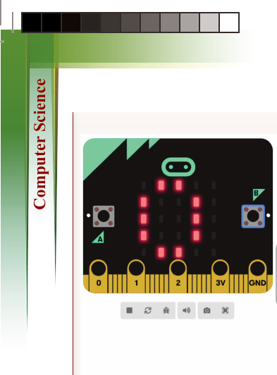
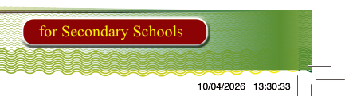
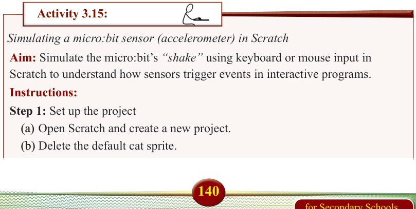

for Secondary Schools
![Figure 3.20 showing a micro:bit reaction timer project: the simulator displays LEDs on the left, and code blocks on the right use button A to show 'Starting' and button B to show 0, pause for a random time, display 'Ready' and 'Go', record running time in startTime and reactionTime, and show the measured number on the LED display; below, deliverables list a working reaction timer program, correct use of the running time block, variables startTime and reactionTime, display of reaction time, and evidence of the completed project.](images/pg148_im009.png)
Figure 3.20: The 'show number' Block Showing Reaction Time on the LED Display
Deliverables:
1. A working micro:bit reaction timer program
2. Correct use of:
(a) running time (ms) block
(b) Variables: startTime and reactionTime
(c) Display of measured reaction time on the LED screen


(d) Screenshot or file of the completed project (or link if shared online)


Document your findings in a portfolio.


Activity 3.15:

Simulating a micro:bit sensor (accelerometer) in Scratch


Aim: Simulate the micro:bit’s “shake” using keyboard or mouse input in

Scratch to understand how sensors trigger events in interactive programs.
Instructions:
Step 1: Set up the project
(a) Open Scratch and create a new project.
(b) Delete the default cat sprite.